Hoja de calculo¶
Hoja de calculo¶
Gráficos¶
Los gráficos representan de forma visual cantidades, porcentajes, etc, como vimos en el tema del procesador de textos. Es una de las herramientas más usadas en Calc , ya que nos permite mostrar gráficamente las aburridas tablas de datos.
Para crear un gráfico con Calc, debe seguir los pasos que se describen a continuación:
- Marcamos el área que contiene los datos que desea representar en el gráfico.
- En la barra de menú elegimos Insertar -> Gráfico.
- Se creará un nuevo gráfico sugerido por el programa, con los datos de la tabla y se mostrará a la derecha la ventana del Editor de gráficos, mediante la que podremos cambiar varios aspectos del gráfico, como veremos más adelante.
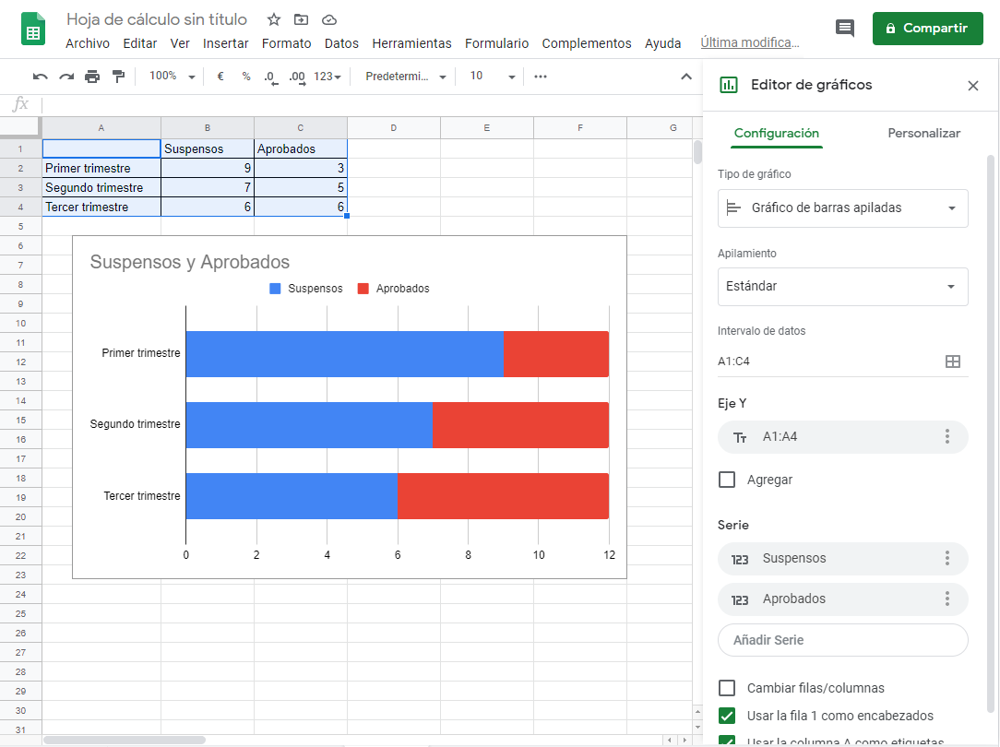
Al insertar un gráfico, Calc nos muestra uno tipo automáticamente en función de los datos introducidos. Cuando seleccionamos la ventana del gráfico se muestra la barra del Editor de gráficos, con la cual podemos cambiar el tipo de gráfico así como los intervalos de datos utilizados en dicho gráfico.
En la pestaña Personalizar podemos cambiar más cosas como el estilo del gráfico, pudiendo elegir un gráfico en 3D, los títulos, la leyenda, los colores, la cuadrícula, etc.
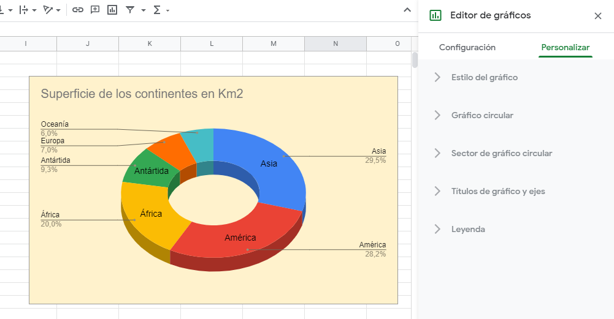
Actividad
📝 AA3.7 Gráficos¶
(C.ESP2 / CE2.3 / IC1-3p)
- Abre la hoja de cálculo de Calc.
- Copia los datos de la siguiente tabla.
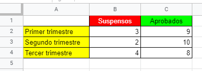
- Selecciona toda la tabla y crea un gráfico idéntico al siguiente (Con los mismos títulos y colores de barras).:
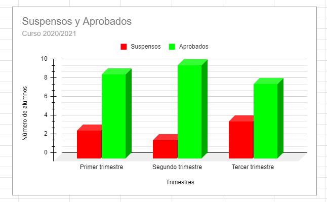
- Ya has visto lo fácil que resulta crear un gráfico, ahora con los mismos datos, prueba a crear distintos típos de datos y a modificar sus colores y líneas.
Funciones matemáticas¶
Mediante las gráficas de Calc también podemos representar gráficamente funciones matemáticas.
Actividad
📝 AA3.8 Funciones matemáticas¶
(C.ESP2 / CE2.3 / IC1-3p)
- Abre la hoja de cálculo de Calc.
- Representa las funciones x^2 tal y como se muestra en la siguiente gráfica: (Puedes conseguir el carácter de cuadrado mediante la función
="x" & CARACTER(178)o pulsando la combinacion de teclasAlt + 0178)
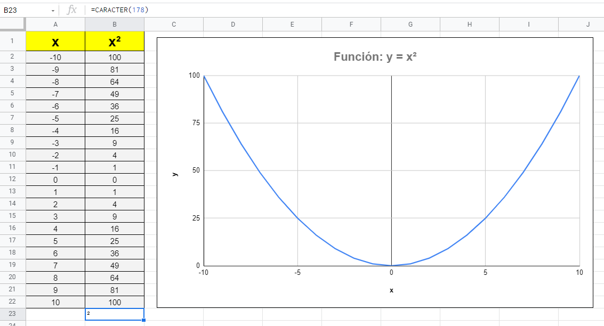
- Ahora realiza tu la gráfica de la función 1/x y la gráfica de la función x + 3 x^2
Actividad
📝 AA3.9 Climograma¶
(C.ESP2 / CE2.3 / IC1-3p)
Un climograma es un gráfico en el que se representan las precipitaciones y las temperaturas medias de un lugar en un año.
- Abre la hoja de cálculo de Calc.
- Copia la siguiente tabla de temperaturas máximas, temperaturas mínimas y precipitaciones de Elche en el año 2025.
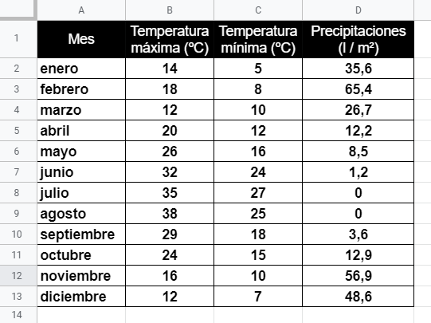
- Calcula la temperatura media de cada mes y realiza un climograma con los datos de temperatura media y precipitaciones, tiene que queda como el siguiente (El tipo de gráfico se selecciona automáticamente).
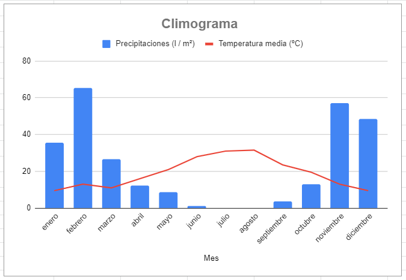
Inserción de dibujos¶
Al igual que con Google Docs, en Calc se pueden insertar imágenes desde el ordenador, desde Google Drive o desde la Web, también se pueden insertar dibujos hechos en la misma aplicación, se pueden insertar formas geométricas, líneas, texto, etc. y se pueden insertar títulos de WordArt.
Para acceder a la inserción de dibujos, pulsamos sobre la opción Insertar -> Imagen o Insertar -> Dibujo del menú.
Actividad
📝 AA3.10 Inserción de dibujos¶
(C.ESP2 / CE2.3 / IC1-3p)
Abre la hoja de cálculo Calc e inserta los dibujos, flechas, imágen, WordArt, etc, para hacer una hoja de cálculo como la siguiente:
- ( Fórmulas para copiar y pegar: A = b · h A = π · r² A = b · h / 2 )
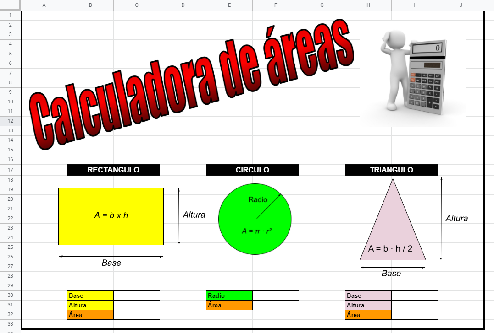
Orden de datos¶
Podemos ordenar los datos de la tabla por cualquiera de las columnas que la forman, tanto desde la A hasta la Z como desde la Z hasta la A.
Para ello seleccionamos una celda (Por ejemplo de la columna A) y elegimos Datos -> Ordenar hoja por columna A, A -> Z del menú. Se ordenará la tabla (No solo la columna A) por la columna A y por orden alfabético.
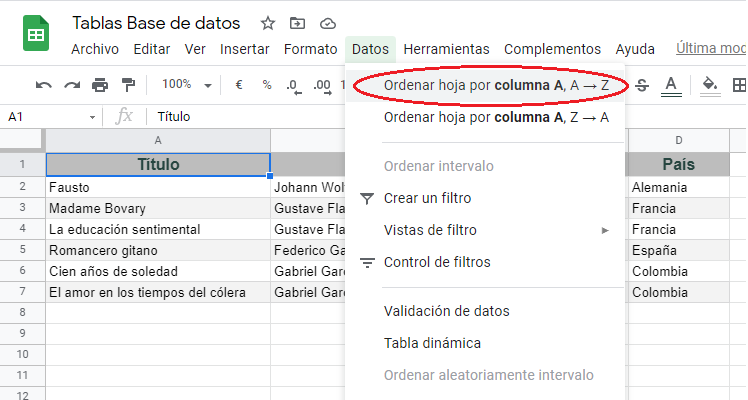
Si lo hacemos así, tenemos el problema de que el encabezado de cada columna entran dentro del orden de los datos y se quitan de la primera fila. Para evitar esto, tenemos que seleccionar todos los datos menos la fila del encabezado y seleccionar Datos -> Ordenar intervalo por columna A, A -> Z del menú.
También podemos inmovilizar la fila del encabezado seleccionándola y eligiendo Ver -> Inmovilizar -> 1 Fila del menú.
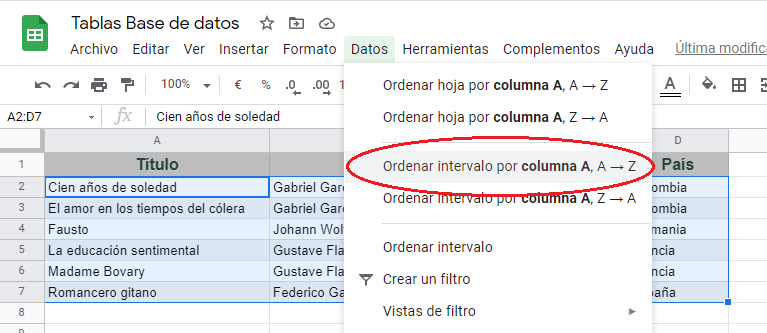
El problema que tenemos ahora con este método es que solo podemos elegir la columna A. Si queremos elegir otra columna, tendremos que seleccionar toda la tabla Podemos hacerlo pulsando el cuadrado vació entre la "A" y el "1" y seleccionar Datos -> Ordenar intervalo del menú.
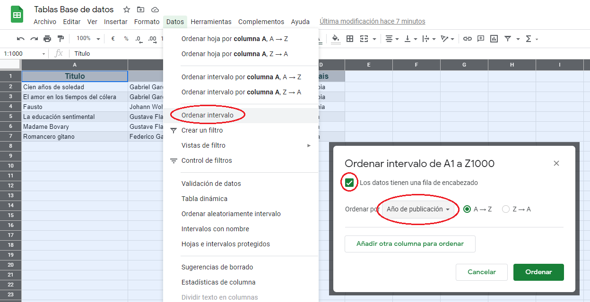
En este caso nos aparece una ventana en la que podemos indicar que los datos tienen una fila de encabezado (Para que no entre en la ordenación) y podemos elegir la columna por la que se ordenará la tabla. Con este método podemos ordenar grandes tablas de datos en un par de pasos.
Si quisiéramos ordenar la tabla por autores y dentro de cada autor, sus obras por orden alfabético, podemos hacerlo pulsando el botón [Añadir otra columna para ordenar].
A veces es útil poner una casilla de verificación en una celda de nuestra tabla de datos para por ejemplo, marcar los libros que hemos leído, las películas que hemos visto, etc.
Para ello, seleccionamos la casilla donde queremos insertar dicha casilla y pulsamos en Insertar -> Casilla de verificación (Permite autocompletar, así que solo lo haremos en la primera casilla).
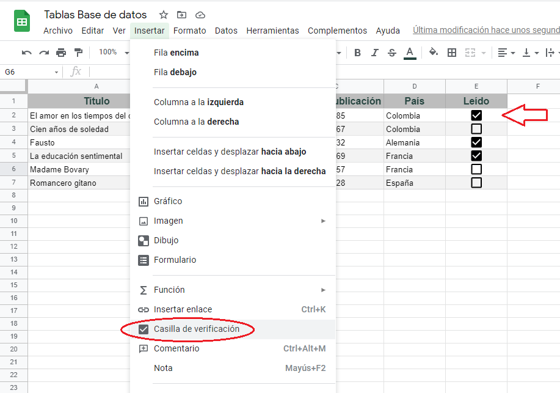
Actividad
📝 AA3.11 Casilla de verificación¶
(C.ESP2 / CE2.3 / IC1-3p)
- Abre la hoja de cálculo Calc y crea una tabla como la siguiente.
- Ordena la tabla por Nacionalidad y dentro de la Nacionalidad, por Apellidos.
- Añade una columna con casillas de verificación llamada Actores y utilízala para marcar a los actores masculinos.
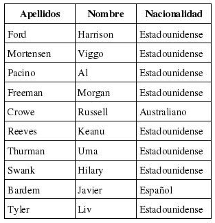
Filtrado de datos¶
Filtrar datos consiste en elegir ciertas filas de datos sujetas a algunas condiciones que podemos seleccionar con antelación.
En primer lugar seleccionamos un intervalo de celdas mediante Datos -> Crear un filtro del menú. (Nos aparece un símbolo en cada celda de la cabecera para indicarlo).
Si pulsamos sobre un icono de filtro, podremos ver las opciones de filtro en el menú que nos aparece:
- Filtrar por condición: Tenemos varias condiciones para elegir los datos que nos interesan o podemos crear nuestras propias condiciones.
- Filtrar por valores: Para ocultar datos, desmarcamos la casilla situada junto a él.
- Buscar: Introduce en el cuadro de búsqueda el dato que quieras buscar.
- Filtrar por color: Elige el color de texto o de relleno por el que quieras filtrar. (Previamente tenemos que utilizar varios colores en los datos).
Este menú también tiene las opciones de ordenar los datos.
Para desactivar el filtro, haz clic en Datos -> Desactivar filtro.
Si compartimos nuestra hoja de cálculo con alguien, el filtro también se aplicará a ese otro editor, por lo que no podrá acceder a todos los datos. Si queremos que esto no ocurra, podemos recurrir a las vistas de filtro. Las vistas de filtro también nos sirve para guardar datos filtrados según varias condiciones y poder consultarlos fácilmente.
Actividad
📝 AA3.12 Filtros¶
(C.ESP2 / CE2.3 / IC1-3p)
- Haz una copia de la siguiente hoja de cálculo de Calc con los datos del Ranking de la ATP de Febrero de 2021, pulsando sobre la misma.
- Filtra los jugadores de nacionalidad española y ordena sus nombres de la A a la Z.
- Crea una Vista de filtro con los tenistas europeos y ordena sus nombres de la A a la Z.
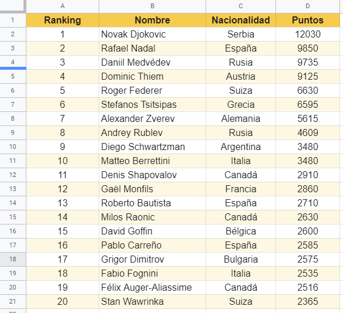
Actividad
🏆 PO3.13 Prueba objetiva tipo test sobre Calc¶
(C.ESP2 / CE2.3 / IC5-30p)
Realiza el test disponible en Aules.
Actividad Profundización
💡 AAP3.14 Función hoy¶
(C.ESP2 / CE2.3 / IC1-3p)
La función HOY en Excel nos devuelve el número de serie de la fecha actual. Un número de serie es el número que Excel utiliza para identificar cualquier fecha a partir del 1 de enero de 1900.
La función HOY en Excel no tiene parámetros así que para utilizarla solo tienes que colocar su nombre seguido de paréntesis en la celda donde quieres ver la fecha actual:
=HOY()
Si el formato de la ceda donde has colocado la función HOY es General, entonces Excel cambiará el formato de la celda a Fecha y mostrará la fecha de hoy:
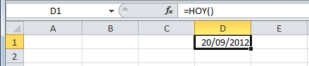
Números de serie de la función hoy
Para conocer el número de serie que nos ha devuelto la función HOY será suficiente con cambiar el formato de la celda a General:
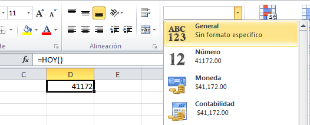
En este ejemplo la fecha 20/09/2012 tiene asignado el número de serie 41172. Excel volverá a mostrar la fecha si cambiamos de nuevo el formato de la celda a Fecha.
Debes recordar que la función HOY actualizará la fecha cada vez que se actualicen las fórmulas de la hoja así que, si guardar y abres el libro de Excel el día de mañana, la función HOY regresará una nueva fecha, es decir, la fecha del día actual.
Calcular la edad con la función HOY
La función HOY en Excel es de utilidad para calcular la edad de una persona si conocemos el año de su nacimiento. En la siguiente fórmula obtendremo el año de la fecha actual y posteriormente le resto el año de la fecha de nacimiento de la persona:
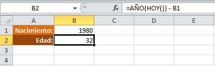
El cálculo de edad mostrado no toma en cuenta el día de nacimiento, pero nos da una idea clara sobre la edad de la persona. Recuerda que la función HOY en Excel siempre nos devolverá la fecha actual del sistema.
Principales funciones fechas y características generales
Como más habituales de este tipo de funciones tenemos:
- AHORA. Devuelve el número de serie correspondiente a la fecha y hora actuales. Ejemplo: =AHORA() devuelve LA fecha correspondiente más la hora ej: 09/09/2021 11:50.
- AÑO. Convierte un número de serie en un valor de año.
Ejemplo: =AÑO(38300) devuelve 2004. En vez de un número de serie le podríamos pasar la referencia de una celda que contenga una fecha: =AÑO(B12) devuelve también 2004 si en la celda B12 tengo el valor 01/01/2004. - DIA. Convierte un número de serie en un valor de día del mes. Ejemplo: =DIA(38300) devuelve 9.
- DIA.LAB. Devuelve el número de serie de la fecha que tiene lugar antes o después de un número determinado de días laborables. Sólo son obligatorios la fecha inicial y los días laborales.
Ejemplo: =DIA.LAB.INTL(FECHA(2010,3,1),5) devuelve 8/03/2010. - DIAS.LAB. Devuelve el número de todos los días laborables existentes entre dos fechas. Sólo son obligatorios la fecha inicial y los días laborales. Calculará en qué fecha se cumplen el número de días laborales indicados.
Ejemplo: =DIA.LAB(«1/5/2010″,30,»3/5/2010») devuelve 14/06/21. - DIAS360. Calcula el número de días entre dos proporcionadas basándose en años de 360 días. Los parámetros de fecha inicial y fecha final es mejor introducirlos mediante la función Fecha(año,mes,dia). El parámetro método es lógico (verdadero, falso), V –> método Europeo, F u omitido–> método Americano. Método Europeo: Las fechas iniciales o finales que corresponden al 31 del mes se convierten en el 30 del mismo mes Método Americano: Si la fecha inicial es el 31 del mes, se convierte en el 30 del mismo mes. Si la fecha final es el 31 del mes y la fecha inicial es anterior al 30, la fecha final se convierte en el 1 del mes siguiente; de lo contrario la fecha final se convierte en el 30 del mismo mes Ejemplo: =DIAS360(Fecha(1975,05,04),Fecha(2004,05,04)) devuelve 10440.
- DIASEM. Convierte un número de serie en un valor de día de la semana. Es decir, devuelve un número del 1 al 7 que identifica al día de la semana, el parámetro tipo permite especificar a partir de qué día empieza la semana, si es al estilo americano pondremos de tipo = 1 (domingo=1 y sábado=7), para estilo europeo pondremos tipo=2 (lunes=1 y domingo=7). Ejemplo: =DIASEM(38300,2) devuelve 2.
- FECHA. Devuelve el número de serie correspondiente a una fecha determinada. Devuelve la fecha en formato fecha, esta función sirve sobre todo por si queremos que nos indique la fecha completa utilizando celdas donde tengamos los datos del día, mes y año por separado. Ejemplo: =FECHA(2004,2,15) devuelve 15/02/2004.
- FECHA.MES. Devuelve el número de serie de la fecha equivalente al número indicado de meses anteriores o posteriores a la fecha inicial.
Ejemplo: =FECHA.MES(«1/7/2010»,99) devuelve 01/10/2018. - FECHANUMERO. Convierte una fecha con formato de texto en un valor de número de serie. Es decir, Devuelve la fecha en formato de fecha convirtiendo la fecha en formato de texto pasada como parámetro. La fecha pasada por parámetro debe ser del estilo «dia-mes-año». Ejemplo: =FECHANUMERO(«12-5-1998») devuelve 12/05/1998
- FIN.MES. Similar a FECHA.MES. Devuelve el número de serie correspondiente al último día del mes anterior o posterior a un número de meses especificado. Ejemplo: =FIN.MES(«15/07/2021»,-5) devuelve 28/02/2021.
- FRAC.AÑO. Devuelve la fracción de año que representa el número total de días existentes entre el valor de fecha_inicial y el de fecha_final. Es decir devuelve la fracción entre dos fechas. La base es opcional y sirve para contar los días. Los posibles valores para la base son:
- 0 para 30/360.
- 1 real/real.
- 2 real/360.
- 3 real/365.
- 4 para Europa 30/360.
- Ejemplo: =FRAC.AÑO(«01/07/2010″,»31/12/2010»,4) devuelve 0,4972 (casi medio año).
- HOY. Devuelve el número de serie correspondiente al día actual. Ejemplo: =HOY() devuelve 09/09/2021.
- MES. Convierte un número de serie en un valor de mes.
- Devuelve el número del mes en el rango del 1 (enero) al 12 (diciembre) según el número de serie pasado como parámetro.
-
Ejemplo: =MES(35400) devuelve 12
-
NUM.DE.SEMANA. Devuelve el número de semana del año con el día de la semana indicado (tipo). Los tipos son:
| Tipo | Una semana comienza |
|---|---|
| 1 u omitido | El domingo. Los días de la semana se numeran del 1 al 7. |
| 2 | El lunes. Los días de la semana se numeran del 1 al 7. |
| 11 | El lunes. |
| 12 | La semana comienza el martes. |
| 13 | La semana comienza el miércoles. |
| 14 | La semana comienza el jueves. |
| 15 | La semana comienza el viernes. |
| 16 | La semana comienza el sábado. |
| 17 | El domingo. |
Ejemplo: =NUM.DE.SEMANA(FECHA(2010,8,21),2) devuelve 34. Como el 21 de agosto de 2010 es sábado, el resultado sería 35 si eligiéramos el tipo 16.
EJERCICIO
Realizar una tabla con al menos diez funciones de fechas de tres columnas con el nombre de la función, la fecha y el resultado, en formato general.
Actividad Profundización
💡 AAP3.15 Listas Desplegables¶
(C.ESP2 / CE2.3 / IC1-3p)
Lo primero que vamos a hacer es crear un hoja de cálculo con 4 columnas a la que le llamaremos Listas_Articulos: y crearemos una fila con los siguientes títulos, Código, Descripción, Color y Categoría.
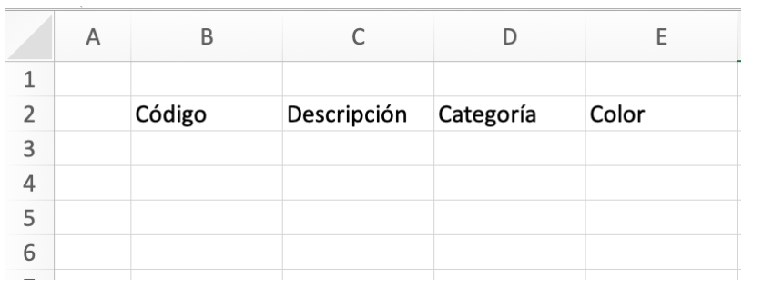
Luego vamos a convertir esto en una tabla, entonces seleccionamos la primera celda (donde escribimos “Código”)
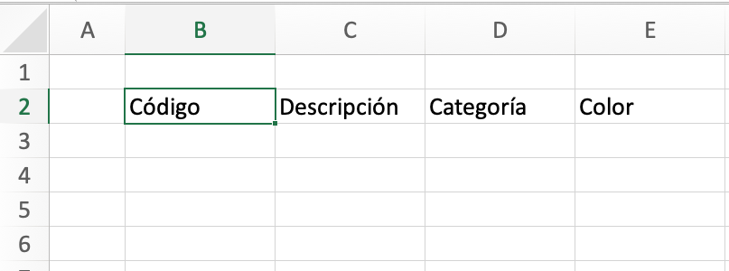
En el menú Insertar, hacemos clic en Tabla, y veremos una ventana, en esa vamos a marcar «La tabla tiene encabezados» le seleccionamose y hacemos clic en el botón Aceptar.
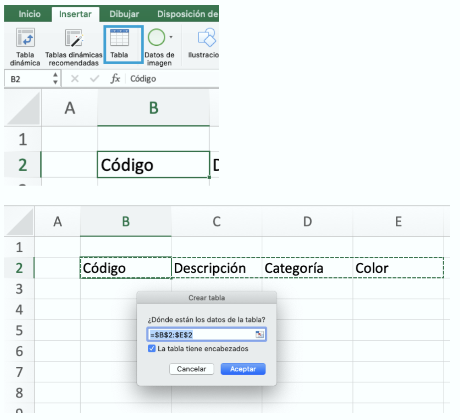
Ahora vamos a crear una nueva hoja, podemos llamarla “Base_Datos”,
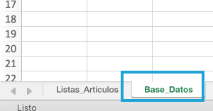
Aquí vamos a colocar las opciones de la listas desplegables.

En este caso, esas son los rangos A2:A11, B2:B11 y C2:C11 entonces la seleccionamos uno por uno y le damos un nombre al rango:
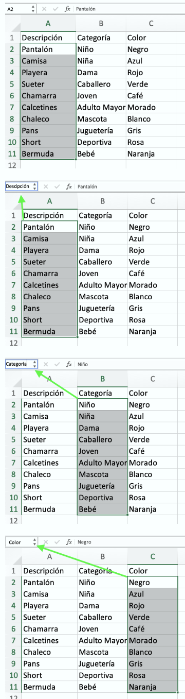
Ahora regresamos a la hoja anterior (Listas_Articulos) y seleccionamos la celda en donde debe ir la lista desplegable y el menú Datos, vamos a hacer clic sobre la opción Validación de Datos.
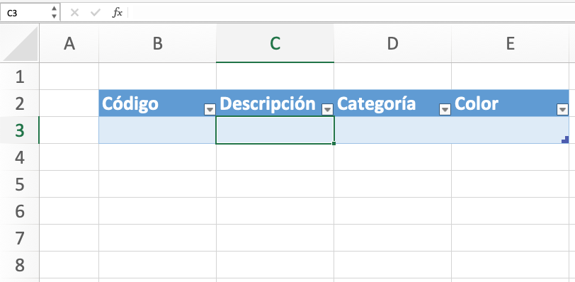
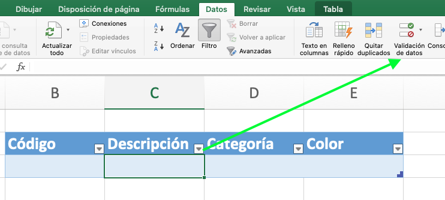
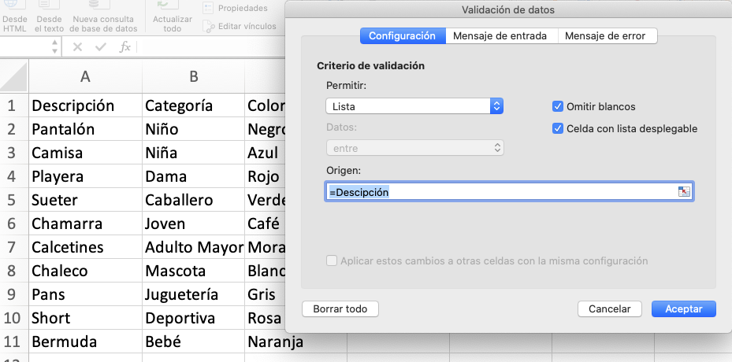 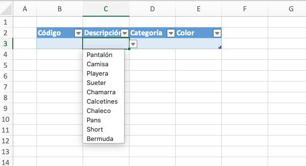
En el resto de las listas se repiten los pasos anteriores para agregar las listas a cada una de las partes de la tabla
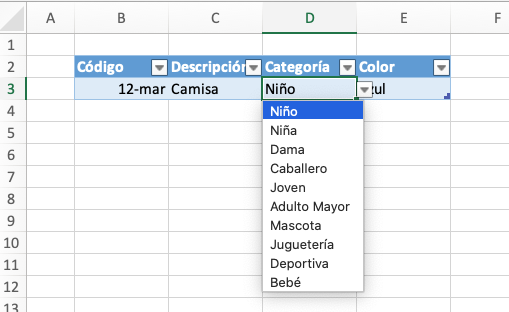
NOTA:
Si olvidaste agregar una categoría más, lo primero que harás es agregar más elementos en la hoja en donde esta tus categorías.En el menú Fórmulas , hacemos clic en Administrador de nombres En la ventana que se abre vamos a seleccionar el rango que usamos, en este caso es Categorías, y vamos a modificar la selección de celdas, agregando la celda que contiene los nuevos valores para nuestra lista y finalmente presionamos el botón Cerrar , y cuando Excel nos pregunte si queremos guardar los cambios, le decimos que Si.
Actividad Profundización
💡 AAP3.16 Buscarv y validación de datos¶
(C.ESP2 / CE2.3 / IC1-3p)
En este ejercicio se resolverá y calculara un problema hipotético sobre una agencia de viajes, donde construiremos una hoja de excel para que nos muestre una cotización de acuerdo al guía de viaje, de lugar y precio
Un ejercicio para usar la función buscarV donde una agencia de viajes podrá configurar presupuestos de un modo rápido y fácil.
Para utilizar correctamente BUSCARV, debes saber cómo introducir la función correctamente. Cada función en Excel tiene una sintaxis determinada de la que no te puedes desviar, ya que de lo contrario, el comando no te devuelve el resultado correcto o emitirá un mensaje de error. BUSCARV se compone de la siguiente sintaxis:
=BUSCARV (valor_buscado, matriz_buscar_en, indicador_columnas, [ordenado])
- valor_buscado (requerido): este parámetro contiene el valor o la cadena que se desea buscar. Puedes introducir este parámetro directamente en la fórmula, adjuntando las palabras que deseas buscar entre comillas, o bien especificar una celda que contenga el contenido.
- matriz_tabla (requerido): en este punto, especifica el rango en el que se encuentran los datos. En las funciones de Excel, siempre se utilizan dos puntos como signo para especificar rangos.
- indicador_columnas (requerido): el indicador de columnas especifica la posición de la columna del valor de retorno dentro de la matriz especificada. Por lo tanto, la columna D no tiene que tener automáticamente el índice 4. Si inicias el área de datos desde la columna B, deberás introducir 3 como indicador de columna.
- intervalo_buscar: este valor especifica si deseas que BUSCARV encuentre una coincidencia exacta o aproximada. VERDADERO da por sentado que la primera columna está ordenada y busca el valor más próximo. FALSO, al contrario, busca el valor exacto en la primera columna.
En la práctica, una función BUSCARV se vería de la siguiente manera: =BUSCARV(4,A2:D5,2,0)
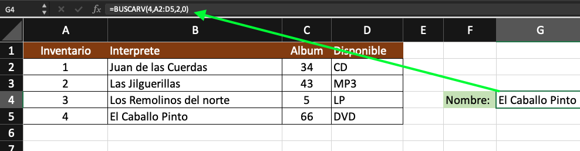
Realiza el siguiente ejercicio:
Copiar la siguiente tabla
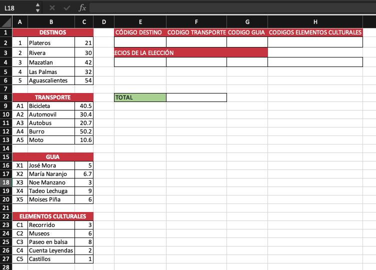
Mediante la función Buscarv:
1.- Al ingresar el código de Destinos en la Celda E2, aparezca en la Celda E4 el precio del Destino
2.- Al ingresar el código de Transporte en la Celda F2, aparezca en la Celda F4, el precio del Transporte
3.- Al ingresar el código de Guía en la Celda G2, aparezca en la Celda G4, el precio del Transporte
4.- Al ingresar el código de Elementos Culturales en la Celda H2, aparezca en la Celda H4, el precio de los Elementos
5.- En Subtotal debe arrojar la Suma del presupuesto del viaje
6.- Crear listas (validación de datos) en las celdas de los rangos E2:H2, para que no se permita el ingreso que no sea el código correspondiente.
7.- En total deberá aparecer el precio final total con un descuento del 5%.